Amas-renderer est un outil permettant de créer un fichier de configuration pour amas-factory de façon visuelle. Pour cela, il faut définir l'infrastructure, les services et les agents du SMA. Les parties suivantes présentent plus en détails chacune de ces entités.
L'infrastructure permet d'interagir avec le SMA et de relier l'environnement aux agents.
Vous pouvez ajouter ou modifier les attributs de l'infrastructure
en cliquant sur l'icône  près du nom de
l'infrastructure.
près du nom de
l'infrastructure.
Le fichier de configuration doit au moins avoir le chemin de la classe de l'infrastructure utilisée.
Dans amas-factory, un service remplit une fonctionnalité du SMA. Plus concrétement, il s'agit par exemple de la communication entre agents ou de l'exécution des agents. En général, les services utilisés par amas-factory font partie de la librairie agent-tooling.
Vous pouvez ajouter un service en cliquant sur le bouton "Ajouter un service". Vous pouvez également modifier et supprimer les services en cliquant sur leur nom respectif dans la liste des services.
Le fichier de configuration doit contenir au moins le service agentHandler qui contient l'ensemble des agents.
Le réseau d'agents est représenté sous forme de graphe, dans la partie droite du programme. Un agent correspond à un noeud et un lien de connaissance correspond à un arc. Ainsi, l'agent source d'une arête orientée connaît l'agent destinataire de cette même arête.
Ajouter un agent :
- Cliquez sur  dans la barre d'outils. Faites un ou plusieurs clics gauche pour ajouter un ou plusieurs agents.
Ou- Maintenez la touche Ctrl enfoncée. Faites un ou plusieurs clics gauche sur le graphe.
Supprimer un agent :
- Cliquez sur dans la barre d'outils. Faites un ou plusieurs clics gauche sur l'agent ou les agents à supprimer.
Ou- Maintenez la touche Ctrl enfoncée. Faites un ou plusieurs clics droit sur l'agent ou les agents à supprimer.
Ajouter un lien de connaissance entre deux agents :
- Cliquez sur  dans la barre d'outils. Faites un clic gauche sur l'agent source, puis faites un clic gauche sur l'agent destinataire.
Ou- Maintenez la touche Maj enfoncée. Faites un clic gauche sur l'agent source, puis faites un clic gauche sur l'agent destinaire.
Supprimer un lien de connaissance entre deux agents :
- Cliquez sur  dans la barre d'outils. Faites un clic gauche sur l'agent source, puis faites un clic gauche sur l'agent destinataire.
Ou- Maintenez la touche Maj enfoncée. Faites un clic droit sur l'agent source, puis faites un clic droit sur l'agent destinaire.
Modifier les attributs d'un agent :
- Faites un clic droit sur l'agent.
Déplacer un agent :
- Maintenez le clic gauche sur l'agent concerné et déplacez la souris.
Réinitialiser la vue :
- Cliquez sur . La caméra va se positionner de façon à ce que tout le graphe soit visible.
Activer/désactiver l'auto-layout :
- Sélectionnez ou déselectionnez le bouton .
Supprimer tous les agents et liens du graphe :
- Cliquez sur .